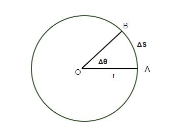
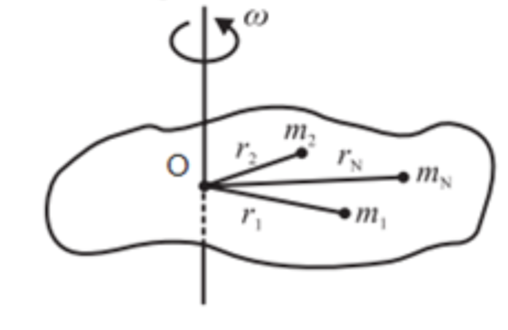
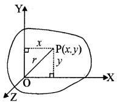
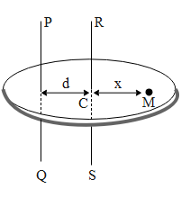
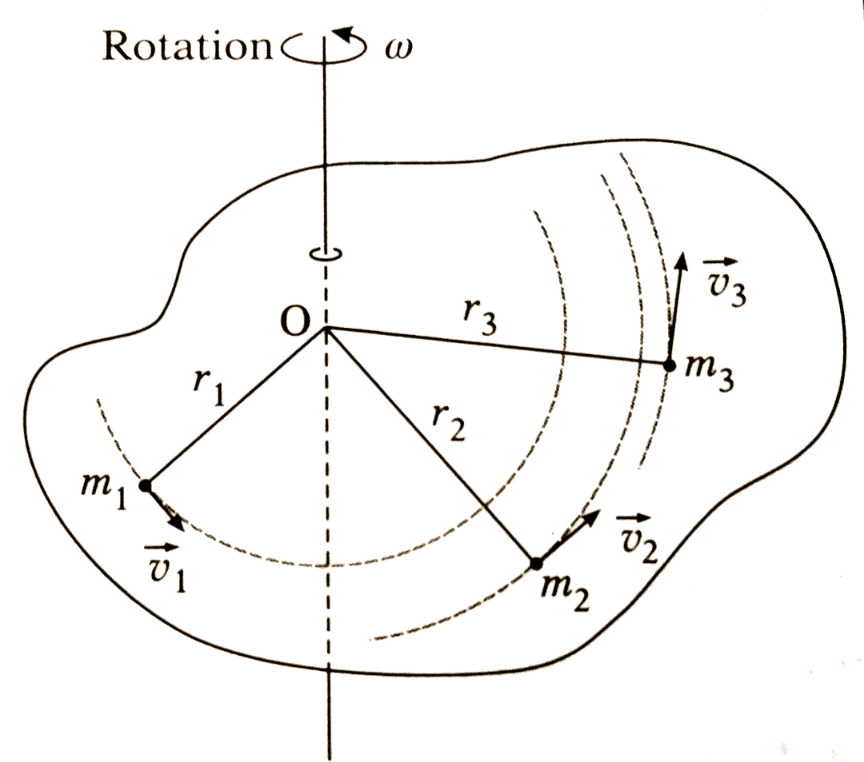

द्रव्यमान केंद्र - किसी पिण्ड का द्रव्यमान केंद्र वह बिंदु है जहाँ पिण्ड का सम्पूर्ण द्रव्यमान केन्द्रित माना जा सकता है।
गणना - माना दृढ़ पिण्ड $m_1, m_2, ... m_n$ द्रव्यमान के कणों से बना है जिनके स्थिति सदिश $\vec{r_1}, \vec{r_2}, ... \vec{r_n}$ हैं।
तब द्रव्यमान केंद्र का स्थिति सदिश -
निर्देशांक के रूप में -
जब कोई पिंड किसी निश्चित अक्ष के चारों ओर घूमता है, तो उसकी गति को घूर्णन गति कहते हैं। इस गति में पिंड के सभी कण वृत्तीय पथ पर गति करते हैं, परन्तु उनका केन्द्र घूर्णन अक्ष पर स्थित होता है।
उदाहरण - लट्टू की गति, पंखे के ब्लेड की गति, पृथ्वी का अपनी धुरी पर घूमना।
घूर्णन अक्ष वह काल्पनिक सीधी रेखा है जिसके चारों ओर कोई पिंड घूमता है।
कोणीय वेग - घूर्णन गति कर रहे किसी कण के कोणीय विस्थापन की दर को कोणीय वेग कहते हैं। इसे $\omega$ से प्रदर्शित करते हैं।
मात्रक - इसका S.I. मात्रक रेडियन / सेकण्ड (rad/s) है।

माना कोई कण $r$ त्रिज्या के वृत्तीय पथ पर $dt$ समय में $d\theta$ कोण घूमता है और $ds$ दूरी तय करता है। तब -
रैखिक वेग $ v =\frac{ds}{dt} $ .....(1)
और कोणीय वेग $\omega =\frac{d\theta}{dt}$ .....(2)
अब चूंकि
चाप = त्रिज्या x कोण
दोनों पक्षों में $dt$ से भाग देने पर -
यही अभीष्ट संबंध है।
कोणीय वेग में परिवर्तन की दर को कोणीय त्वरण कहते हैं। इसे $\alpha$ से प्रदर्शित करते हैं।
मात्रक - इसका S.I. मात्रक रेडियन / सेकण्ड$^2$ ( $rad/s^2$) है।
हम जानते हैं -
रेखीय त्वरण $a = \frac{dv}{dt}$ .....(1)
और कोणीय त्वरण $\alpha = \frac{d\omega}{dt}$ .....(2)
हम जानते हैं रेखीय वेग तथा कोणीय वेग में निम्न सम्बद्ध होता हैं।
दोनों पक्षों का $t$ के सापेक्ष अवकलन करने पर -
यही अभीष्ट संबंध है।
किसी बल द्वारा किसी पिंड को किसी अक्ष के परितः घुमाने की प्रवृत्ति को बल आघूर्ण कहते हैं। इसे $\tau$ (टाऊ) से दर्शाते हैं।
यह स्थिति सदिश $\vec{r}$ और बल $\vec{F}$ के सदिश गुणनफल के बराबर होता है।
यह सदिश राशि है।
इसका S.I. मात्रक न्यूटन-मीटर ( $N-m$) तथा विमीय सूत्र $[M L^2 T^{-2}]$ होता है।
दो समान तथा विपरीत समान्तर बल जिनकी क्रिया-रेखा अलग-अलग हो, बल-युग्म कहलाते हैं।
गुण -
1. परिणामी बल शून्य होता है।
2. केवल घूर्णन गति देता है।
किसी बल-युग्म में से एक बल तथा दोनों बलों के बीच की लम्बवत दूरी के गुणनफल को बल-युग्म आघूर्ण कहते हैं। इसे $\tau$ (टाऊ) से दर्शाते हैं।
यह सदिश राशि है।
इसका S.I. मात्रक न्यूटन-मीटर ( $N-m$) तथा विमीय सूत्र $[M L^2 T^{-2}]$ होता है।
घूर्णन गति में पिंड का वह गुण जो उसकी घूर्णन अवस्था में परिवर्तन का विरोध करता है, जड़त्व आघूर्ण कहलाता है।
यह रेखीय गति में द्रव्यमान (जड़त्व) के तुल्य होता है।
इसका S.I. मात्रक $kg \cdot m^2$ होता है।
यह दो बातों पर निर्भर करता है -
1. पिंड के द्रव्यमान पर
2. घूर्णन अक्ष के परितः द्रव्यमान के वितरण पर

यदि किसी पिंड के $n$ कणों के द्रव्यमान $m_1, m_2, m_3...$ हों और घूर्णन अक्ष से उनकी दूरियाँ $r_1, r_2, r_3...$ हों, तो -
| क्र. | जड़त्व | जड़त्व आघूर्ण |
|---|---|---|
| 1. | पिंड का वह गुण जो उसकी विराम या गति की अवस्था में परिवर्तन का विरोध करता है, जड़त्व कहलाता है। | पिंड का वह गुण जो उसकी घूर्णन अवस्था में परिवर्तन का विरोध करता है, जड़त्व आघूर्ण कहलाता है। |
| 2. | यह रेखीय गति से संबंधित है। | यह घूर्णन गति से संबंधित है। |
| 3. | यह केवल द्रव्यमान पर निर्भर करता है। $J = M$ | यह द्रव्यमान और घूर्णन अक्ष से दूरी दोनों पर निर्भर करता है। $I = \sum mr^2$ |
| 4. | इसका मात्रक kg है। | इसका मात्रक $kg \cdot m^2$ है। |
| 5. | यह अदिश राशि है। | यह प्रदिश (Tensor) राशि है। |
लंबवत अक्ष प्रमेय - इस प्रमेय के अनुसार, किसी समतल पटल (लैमिना) के तल में स्थित दो परस्पर लंबवत अक्षों के परितः जड़त्व आघूर्णों का योग, उन दोनों अक्षों के प्रतिच्छेद बिंदु से जाने वाले तथा पटल के लंबवत अक्ष के परितः जड़त्व आघूर्ण के बराबर होता है।
सिद्ध करना -

माना कोई समतल पटल $XY$ तल में स्थित है। इसके तल में $OX$ और $OY$ दो परस्पर लंबवत अक्ष हैं और $OZ$ अक्ष $XY$ तल के लंबवत है।
माना पटल का एक कण $P$ है जिसका द्रव्यमान $m$ है और मूल बिंदु $O$ से दूरी $r$ है। $P$ के निर्देशांक $(x, y)$ हैं।
तब -
$OX$ अक्ष के परितः जड़त्व आघूर्ण -
$OY$ अक्ष के परितः जड़त्व आघूर्ण -
$OZ$ अक्ष के परितः जड़त्व आघूर्ण -
यही लंबवत अक्ष प्रमेय है।
समान्तर अक्ष प्रमेय - इस प्रमेय के अनुसार, किसी पिंड का किसी अक्ष के परितः जड़त्व आघूर्ण, उसके द्रव्यमान केंद्र से जाने वाली समान्तर अक्ष के परितः जड़त्व आघूर्ण तथा पिंड के द्रव्यमान और दोनों अक्षों के बीच की दूरी के वर्ग के गुणनफल के योग के बराबर होता है।
जहाँ $I_{cm}$ = द्रव्यमान केंद्र से जाने वाली अक्ष के परितः जड़त्व आघूर्ण, $M$ = पिंड का कुल द्रव्यमान, $d$ = दोनों अक्षों के बीच की दूरी।
सिद्ध करना -

माना किसी पिंड का द्रव्यमान $M$ है और उसके द्रव्यमान केंद्र $C$ से जाने वाली अक्ष $RS$ है। इसके समान्तर $d$ दूरी पर दूसरी अक्ष $PQ$ है।
माना पिंड के $m$ द्रव्यमान वाले कण की $RS$ अक्ष से दूरी $x$ है तथा $PQ$ अक्ष से दूरी $(x + d)$ है।
$RS$ अक्ष के परितः जड़त्व आघूर्ण -
$I_{cm} = \sum m x^2$
$PQ$ अक्ष के परितः जड़त्व आघूर्ण -
$I = \sum m (x + d)^2$
द्रव्यमान केंद्र की परिभाषा से $\sum m x = 0$
यही समान्तर अक्ष प्रमेय है।
किसी पिंड के घूर्णन अक्ष से वह दूरी जहाँ पर यदि पिंड के सम्पूर्ण द्रव्यमान को केंद्रित मान लिया जाए, तो उसका जड़त्व आघूर्ण वही रहता है जो वास्तविक द्रव्यमान वितरण से प्राप्त होता है, उसे परिभ्रमण त्रिज्या कहते हैं। इसे $K$ से दर्शाते हैं।
यदि पिंड का कुल द्रव्यमान $M$ तथा घूर्णन अक्ष के परितः जड़त्व आघूर्ण $I$ हो, तो -
अर्थात् परिभ्रमण त्रिज्या $K = \sqrt{\frac{\sum mr^2}{M}}$
मात्रक - मीटर (m)

माना कोई पिंड $N$ कणों से मिलकर बना है, जिनके द्रव्यमान $m_1, m_2, m_3...m_N$ हैं और ये घूर्णन अक्ष से क्रमशः $r_1, r_2, r_3...r_N$ दूरी पर हैं।
पिंड को $\omega$ कोणीय वेग से घुमाया जाता है।
पहले कण की रेखीय वेग $v_1 = r_1 \omega$
पहले कण की गतिज ऊर्जा -
इसी प्रकार सम्पूर्ण पिंड की कुल गतिज ऊर्जा -
घूर्णन गति करते हुए किसी कण के स्थिति सदिश और रेखीय संवेग के सदिश गुणनफल को उस कण का कोणीय संवेग कहते हैं। इसे $J$ या $L$ से दर्शाते हैं।
मात्रक -
S.I. मात्रक - $kg \cdot m^2 / sec$ या $Joule \cdot sec$
विमीय सूत्र - $[M L^2 T^{-1}]$
यदि किसी पिंड या निकाय पर बाह्य बल आघूर्ण शून्य हो, तो उसका कुल कोणीय संवेग नियत रहता है अर्थात् संरक्षित रहता है।
अर्थात् $I_1 \omega_1 = I_2 \omega_2 = $नियतांक
उदाहरण - बर्फ पर स्केटिंग करने वाला व्यक्ति जब अपने हाथ सिकोड़ लेता है तो उसका जड़त्व आघूर्ण कम हो जाता है, जिससे उसका कोणीय वेग बढ़ जाता है ताकि $I\omega$ नियत रहे।
माना कोई पिंड $N$ कणों से मिलकर बना है, जिनके द्रव्यमान $m_1, m_2, m_3...m_N$ हैं और ये घूर्णन अक्ष से क्रमशः $r_1, r_2, r_3...r_N$ दूरी पर हैं।
पिंड को $\omega$ कोणीय वेग से घुमाया जाता है।
पहले कण का रेखीय वेग $v_1 = r_1 \omega$
पहले कण का रेखीय संवेग -
पहले कण का घूर्णन अक्ष के परितः कोणीय संवेग -
इसी प्रकार सम्पूर्ण पिंड का कुल कोणीय संवेग -
माना कोई पिंड $N$ कणों से मिलकर बना है, जिनके द्रव्यमान $m_1, m_2, m_3...m_N$ हैं और ये घूर्णन अक्ष से क्रमशः $r_1, r_2, r_3...r_N$ दूरी पर हैं।
पिंड को $\alpha$ कोणीय त्वरण से घुमाया जाता है।
पहले कण का रेखीय त्वरण $a_1 = r_1 \alpha$
पहले कण पर लगने वाला बल -
पहले कण का घूर्णन अक्ष के परितः बल आघूर्ण -
इसी प्रकार सम्पूर्ण पिंड का कुल बल आघूर्ण -
हम जानते हैं -
समय के सापेक्ष अवकलन करने पर -
परन्तु $\frac{d\vec{\omega}}{dt} = \vec{\alpha}$ (कोणीय त्वरण)
यही सिद्ध करना था।